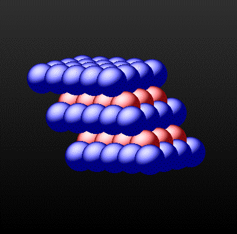
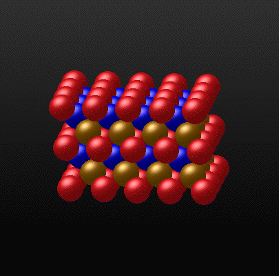
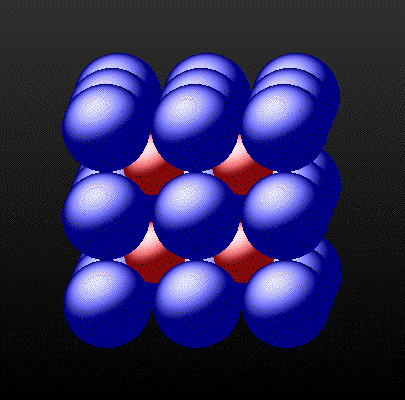
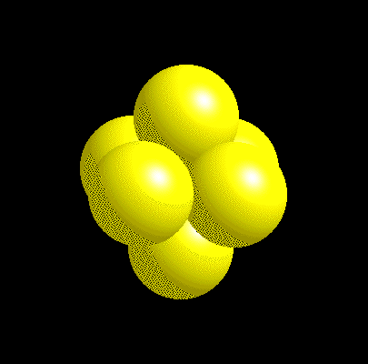
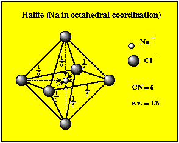
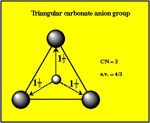
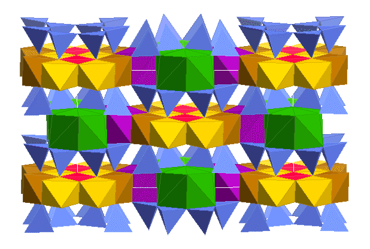

Pauling's Rules a set of "rules" (i.e., generalizations) used to determine the nature of crystalline structures.
In effect, the rules are design to:
|
Coordination type |
C.N. |
Radius ratio |
Example |
| HCP | 12 | 1.00 |  |
| CCP | 12 | 1.00 |  |
| Cubic Coordination | 8 | 1.00 - 0.73 |  |
| Octahedral | 6 | 0.73 - 0.42 |  |
| Tetrahedral | 4 | 0.42 - 0.23 | |
| Triangular | 3 | 0.23 - 0.16 | |
| Linear | 2 | < 0.16 |
2. Electrostatic valence Rule The total strength of valencey bonds that reach a cation from all neighboring anions must equal the charge of the cation.
The strength of an electrostatic bond, known as the electrostatic valence (e.v.)
where:
e.v. = | valence/C.N.|
Example: Na+ is octahedrally coordinated. Therefore e.v. = 1/6. Cl- also has an e.v. of 1/6.

When all bonds are of equal strength then this is termed isodesmic.
In many cases the bond strengths are not all equal. If you have a small compact group comprising a highly charged cation and less strongly charged anions then their e.v.'s will be large.

The 1 1/3 value is greater than one-half
the oxygen
ion (1)
Therefore, a radical carbonate group exists (i.e., CO32-)
These functional groups typically bonds more weakly with another
cation
(e.g., Calcite CaCO3).
When there is a disparity in the bond strengths (e.v.'s) then
these structures
are said to be anisodesmic.
The most common example is the silicate tetrahedra, where e.v. = 1, which is half of the oxygen ion.
In the case the anion groups may bond together to form chains, sheets, and boxwork polymers (e.g. quartz).

The amphibole structure above has one of the most complex site assemblages.
{kind=link}
{kind=link}
{kind=link}
{kind=link}
{kind=link}
{kind=link}